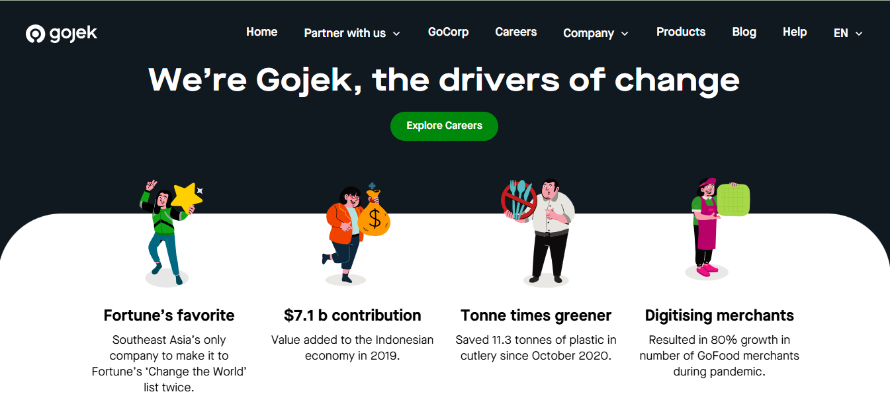
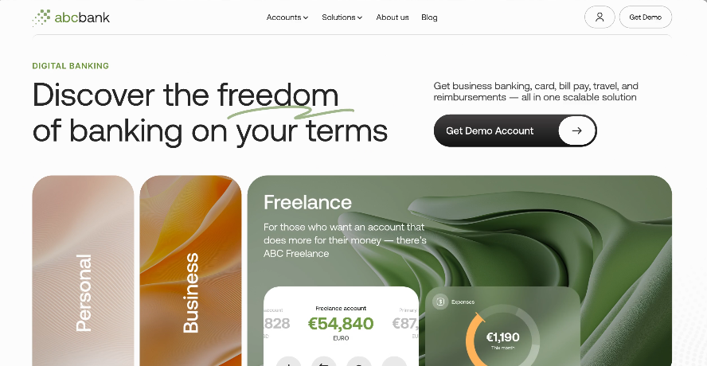

Saya seorang UI Designer yang bersemangat untuk menciptakan desain yang tidak hanya menarik, tetapi juga memudahkan pengguna. Sejak memulai karir saya di bidang desain, saya telah bekerja dengan berbagai perusahaan untuk merancang antarmuka yang memprioritaskan pengalaman pengguna yang optimal. Saya percaya bahwa desain yang baik adalah desain yang intuitif dan dapat menghubungkan pengguna dengan produk secara alami. Saya memiliki pengalaman dalam menggunakan berbagai alat desain seperti Figma, Adobe XD, Sketch, dan tools prototyping lainnya untuk menciptakan wireframes, mockups, dan prototipe interaktif. Saya berfokus pada pendekatan desain berbasis data untuk memastikan setiap keputusan desain sesuai dengan kebutuhan pengguna dan tujuan bisnis.
Universitas Siliwangi-Informatika
2000-2004
UI Designer
2005-2007
Keahlian Utama Desain UI: Prototyping, wireframing, dan desain antarmuka untuk aplikasi web dan mobile. Tools Desain: Figma, Adobe XD, Sketch, InVision, Zeplin. Desain Responsif: Mendesain antarmuka yang optimal untuk berbagai ukuran layar (mobile, tablet, desktop). Interaksi Pengguna (UX/UI): Membuat alur pengguna yang intuitif dan pengalaman yang seamless. Desain Visual: Penguasaan tipografi, warna, dan elemen visual lainnya untuk menciptakan desain yang estetis dan fungsional. Keahlian Non-Teknis Kolaborasi Tim: Pengalaman bekerja dengan pengembang dan tim produk untuk menghasilkan solusi desain yang efektif. Manajemen Proyek: Kemampuan mengelola berbagai proyek desain sekaligus dengan tenggat waktu yang ketat. Komunikasi: Menyampaikan ide desain dengan jelas kepada klien dan tim pengembang.
Mengapa Memperkerjakan Saya Kenapa Memilih Saya sebagai UI Designer Anda?Saya tidak hanya fokus pada menciptakan desain yang estetik, tetapi saya juga memastikan bahwa desain saya memberikan pengalaman pengguna yang optimal. Saya bekerja dengan prinsip desain yang berbasis data, memastikan setiap keputusan desain dibuat untuk meningkatkan fungsionalitas dan kenyamanan pengguna. Dengan pengalaman saya dalam berbagai proyek, saya selalu memastikan bahwa saya memahami tujuan bisnis Anda dan kebutuhan pengguna sebelum memulai proses desain. Saya berkomitmen untuk menghasilkan desain yang tidak hanya indah secara visual tetapi juga memudahkan interaksi dan mencapai hasil yang diinginkan. Keunggulan Saya Desain yang responsif dan sesuai kebutuhan. Kemampuan untuk bekerja dengan tim dan berkolaborasi dengan pengembang. Pendekatan yang berorientasi pada pengguna dengan pemahaman mendalam tentang UX.
Apa kata klien tentang saya?Berikut adalah beberapa testimoni dari klien yang telah bekerja sama dengan saya dalam menciptakan desain antarmuka yang efektif. "Kerja sama dengan Rizal Reynaldi luar biasa! Desain UI yang dihasilkan tidak hanya memukau secara visual, tetapi juga sangat mudah digunakan. Aplikasi kami menjadi lebih menarik dan fungsional berkat desainnya." – Ririn, Gojek "Saya sangat puas dengan hasil desain UI yang diberikan oleh Rizal Reynaldi. Ia mampu memahami kebutuhan kami dan memberikan solusi desain yang tepat sasaran." – Alex, Lys
Berikut adalah beberapa proyek yang saya kerjakan sebagai UI Designer. Setiap proyek di sini mencerminkan keterampilan saya dalam merancang antarmuka yang estetis dan user-friendly, dengan mempertimbangkan setiap detail pengalaman pengguna.
Deskripsi: Sebuah aplikasi mobile yang dirancang untuk mempermudah pengguna dalam menggunakannya. Tantangan: Mendesain antarmuka yang responsif dan mudah digunakan oleh berbagai kalangan pengguna. Solusi: Menggunakan prinsip desain yang bersih dan minimalis untuk menciptakan alur pengguna yang intuitif.
Deskripsi: Website untuk keuangan, fokus pada navigasi yang mudah dan desain yang ramah pengguna. Tantangan: Mengoptimalkan desain untuk desktop dan mobile dengan mempertimbangkan kebutuhan pengguna yang berbeda. Solusi: Membuat desain responsif dengan elemen-elemen visual yang menarik namun sederhana.
Hubungi SayaSaya selalu terbuka untuk proyek-proyek baru dan kesempatan kolaborasi. Jika Anda ingin mendiskusikan ide desain Anda atau memiliki pertanyaan, jangan ragu untuk menghubungi saya! Kontak Email: rizalreynaldi07@gmail.com Telepon: 083116689779 LinkedIn: Rizal Reynaldi Dribbble: rizalreynaldi